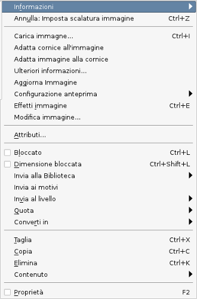
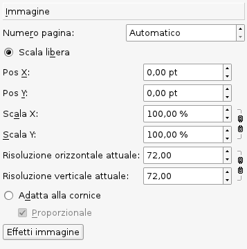

Il modo più rapido di caricare un'immagine nella cornice consiste nel fare clic col tasto destro sulla cornice e selezionare Carica immagine nel menù contestuale. Quest'operazione può essere eseguita anche premendo Ctrl + I oppure dal menù File > Importa > Carica immagine. In tutti e tre i casi, si apre una finestra di dialogo per la scelta del file da caricare: vengono mostrati i tipi di file che Scribus è in grado di importare, e cioè i formati bitmap TIFF, PNG, JPG, GIF e XPM, il formato vettoriale PS (PostScript) e i file PSD, EPS e PDF, che saranno convertiti in bitmap. Dopo l'importazione l'immagine potrebbe essere visibile solo in parte: nel paragrafo Proprietà: immagine più sotto vedremo come regolare la scalatura e la posizione dell'immagine all'interno della cornice.
Fate clic col tasto destro del mouse su una cornice immagine per visualizzare il menù contestuale. Se la cornice è vuota, non tutte le voci saranno presenti.
|
 |
| Quando un'immagine viene caricata, per impostazione predefinita sarà visualizzata con scala libera o in base all'impostazione in File > Preferenze > Strumenti > Immagini.
Sotto Scala libera vi sono le seguenti caselle di controllo:
In molti casi potremmo avere una cornice di dimensioni fisse in cui vogliamo far entrare un'intera immagine, e lo possiamo fare con Adatta alla cornice (o Adatta immagine alla cornice dal menù contestuale. Se non contrassegniamo l'opzione Proporzionale, l'immagine è forzata ad allargarsi o restringersi fino ad avere le stesse dimensioni della cornice e potrebbe essere distorta. Un utile modo per dare alla cornice le dimensioni adatte per l'immagine contenuta consiste nella scalatura (proporzionale) alle dimensioni della cornice e poi nell'applicare Adatta cornice all'immagine dal menù contestuale. |
 |
Nelle cornici immagine la modalità Modifica contenuto permette di spostare l'immagine all'interno della cornice facendo clic e trascinandola con il mouse, che equivale a modificare le posizioni X e Y nella scheda Immagine.
Vedi anche: